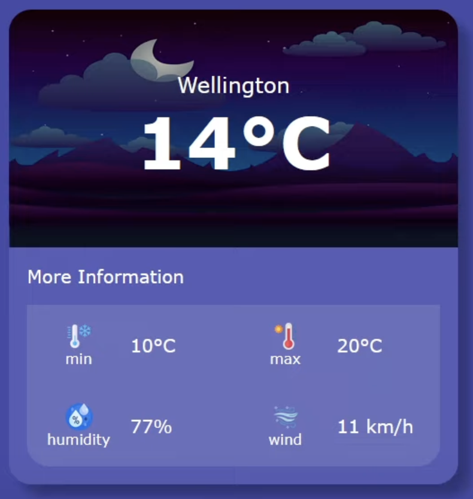
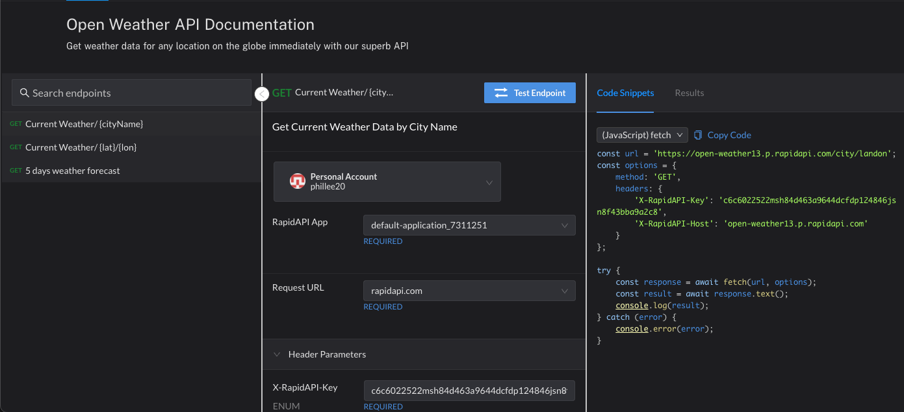
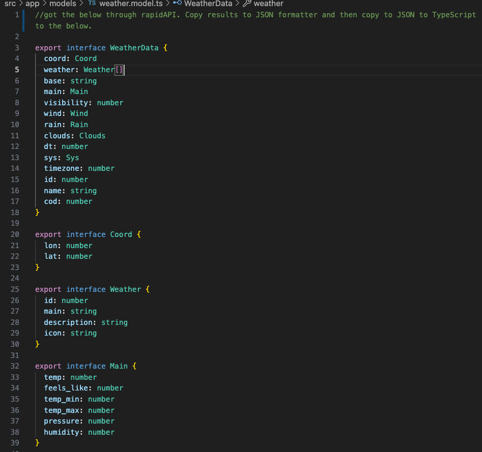

Open Weather
This project is created using Angular, an open source JavaScript framework along with Open Weather API from rapidAPI. The Open Weather API is free, hence it only permits 50 requests per month, therefore you may not be able to see the site once requests are filled. The project is deployed on Netlify which I have on the link below.
The temperature, minimum temp, maximum temp, humidity and wind speed are pulled in from the response data. To get the response data, I had to get the response from rapidAPI (test endpoint) then copy the result into JSON formatter and finally convert to TypeScript which resulted in the weather.model.ts file showing the required response I need for the front end.
Link to the deployed weather site here
Link to the github repository here
Weather
Weather Main
Open Weather API
Weather Model
Tech Stack Used
-
 Angular
Angular
-
 TypeScript
TypeScript
-
 GitHub
GitHub
-
 VS Code
VS Code